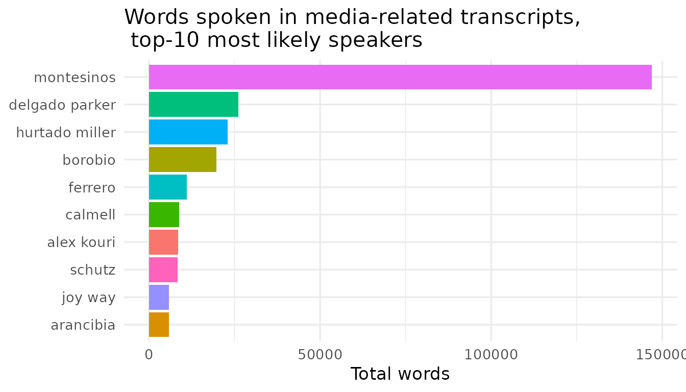
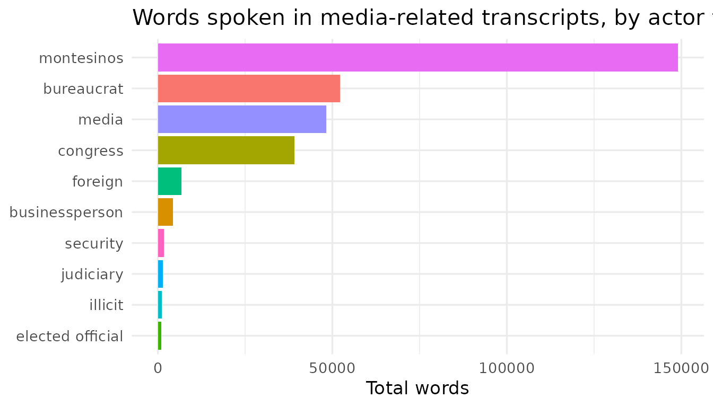

BribeR provides structured, full-text access to 99 Vladivideo transcripts, along with metadata about the conversations, speakers, and topics. This vignette introduces the three main families of functions (below) and provides user-friendly examples for how to use BribeR.
1. Read transcripts
2. Find transcripts
3. Integrate with metadata
To begin, install and load the package:
# Install from CRAN
install.packages("BribeR")
# Or install the development version from GitHub
remotes::install_github("jessietrudeau/BribeR")
# Load packages
library(BribeR)
library(dplyr)
#>
#> Attaching package: 'dplyr'
#> The following objects are masked from 'package:stats':
#>
#> filter, lag
#> The following objects are masked from 'package:base':
#>
#> intersect, setdiff, setequal, unionRead transcripts
Use read_transcripts() to access the corpus of full-text
transcripts as a tidy data frame. Each row corresponds to one speech
turn, indexed by transcript ID (id), date, standardized
speaker name, and speaker. The column speech includes the
full-text transcription of one turn.
# Get full-text transcripts
transcripts <- read_transcripts()
# Additional variables
colnames(transcripts)
#> [1] "id" "row_id" "date" "speaker_std" "speaker"
#> [6] "speech"
head(transcripts)
#> # A tibble: 6 × 6
#> id row_id date speaker_std speaker speech
#> <dbl> <int> <chr> <chr> <chr> <chr>
#> 1 1 1 3/25/1997 background background Declaraciones de Víc…
#> 2 1 2 3/25/1997 background background [La entrevista se rea…
#> 3 1 3 3/25/1997 alva la señora Levante su mano derec…
#> 4 1 4 3/25/1997 alva el señor javier alva Sí.
#> 5 1 5 3/25/1997 lewis el señor neil lewis Señor Alva, mi nombre…
#> 6 1 6 3/25/1997 alva el señor javier alva Javier Alva Orlandini.You can filter to one or more transcripts using their numeric IDs:
# Select first transcript
t1 <- read_transcripts(transcripts = 1)
nrow(t1)
#> [1] 697
# Select multiple transcripts
t_sub <- read_transcripts(transcripts = c(5, 12, 47))
nrow(t_sub)
#> [1] 1324Read raw transcript data
get_transcripts_raw() provides access to the original
source CSV files for users who wish to access the data before
compilation.
# Load transcript 3 as a data frame
t3 <- get_transcripts_raw(n = 3)
# Load multiple transcripts combined into a single tibble
combined <- get_transcripts_raw(n = c(3, 19, 47), combine = TRUE)Find transcripts
If users know the actor(s) or topic(s) they wish to focus on, but not
the numeric id, use get_transcript_id() to
filter transcripts by speaker or topic characteristics.
By actor
The get_transcript_id() function accepts lowercase
string values for the standardized speaker’s name (the
speaker_std variable), and returns transcript IDs where
these speakers are present.
# Transcripts featuring Montesinos
montesinos_ids <- get_transcript_id(speaker = "montesinos")
length(montesinos_ids)
#> [1] 86
montesinos_ids
#> [1] 5 6 8 9 10 11 12 13 14 15 16 17 19 20 21 22 23 24 25
#> [20] 26 27 28 29 30 31 32 33 34 35 36 38 39 40 41 44 45 46 47
#> [39] 48 49 50 51 52 56 57 58 59 60 61 62 63 64 65 66 67 68 69
#> [58] 70 71 72 73 74 75 76 77 78 79 80 81 82 83 84 85 86 87 88
#> [77] 89 90 94 95 96 97 98 102 103 104
# Transcripts featuring Alex Kouri
kouri_ids <- get_transcript_id(speaker = "alex kouri")
length(kouri_ids)
#> [1] 9
kouri_ids
#> [1] 10 38 39 41 76 78 82 83 86
# Transcripts featuring both Alex Kouri and Crousillat
# (a TV producer with America Television)
kouri_crousillat_ids <- get_transcript_id(speaker = c("alex kouri", "crousillat"))
length(kouri_crousillat_ids)
#> [1] 2
kouri_crousillat_ids
#> [1] 76 82There are 125 valid speaker IDs that the speaker_std
variable can take on, listed in the actors dataset.
By topic
Similarly, get_transcript_id() function accepts
lowercase string values for topic names, and returns transcript IDs
where these topics are discussed.
# Transcripts about media manipulation
media_ids <- get_transcript_id(topic = "media")
length(media_ids)
#> [1] 37
media_ids
#> [1] 4 6 8 9 24 25 33 34 35 39 41 42 43 44 45 50 55 56 58
#> [20] 59 62 70 71 72 73 74 75 79 86 87 88 90 94 95 97 102 103
# Transcripts about BOTH media and reelection
media_reelection_ids <- get_transcript_id(topic = c("media", "reelection"))
length(media_reelection_ids)
#> [1] 8There are 15 valid topics, listed in the Raw Data Guide.
By both
Finally, users can filter transcripts by actor and topic. This function uses AND logic and returns transcript IDs where both the selected speaker(s) are present and topic is mentioned.
# Find transcripts about media
media_ids <- get_transcript_id(topic = "media")
length(media_ids)
#> [1] 37
# Find transcripts about media where a television producer is present
media_crousillat_ids <- get_transcript_id(topic = "media", speaker = "crousillat")
length(media_crousillat_ids)
#> [1] 2Integrate with metadata
Rich transcript-level and actor-level metadata is available in BribeR.
The read_transcript_meta_data() function presents
transcript-level data containing dates, summaries,1 speakers present,
topics mentioned, and word counts.
When left blank, it returns the metadata for every transcript in the
corpus, but can also be filtered using the transcript id
variable.
meta <- read_transcript_meta_data()
head(meta)
#> # A tibble: 6 × 5
#> id date speakers n_words topics
#> <dbl> <chr> <list> <int> <list>
#> 1 1 1997-03-25 <chr [4]> 10375 <chr [2]>
#> 2 2 1997-03-26 <chr [2]> 7120 <chr [3]>
#> 3 3 1997-03-26 <chr [3]> 7006 <chr [3]>
#> 4 4 1997-06-13 <chr [2]> 175 <chr [3]>
#> 5 5 1998-01-08 <chr [5]> 9391 <chr [3]>
#> 6 6 1998-01-12 <chr [2]> 13035 <chr [3]>
# Get metadata for transcript 5
read_transcript_meta_data(5)
#> # A tibble: 1 × 5
#> id date speakers n_words topics
#> <dbl> <chr> <list> <int> <list>
#> 1 5 1998-01-08 <chr [5]> 9391 <chr [3]>Examples
The two below examples demonstrate how the BribeR functions and data can be used together.
Example 1: Who speaks about media manipulation? For how long?
Say that we are interested in how Montesinos and his counterparts talk about a commonly discussed topic, media manipulation. First, we start by selecting the conversations about media manipulation and counting which actors speak the most during these conversations:
library(ggplot2)
# Step 1: find transcript IDs about media
media_ids <- get_transcript_id(topic = "media")
# Step 2: load just those transcripts about the media
media_transcripts <- read_transcripts(transcripts = media_ids)
# Step 3: count words spoken per actor
media_transcripts |>
mutate(n_words = lengths(strsplit(speech, "\\s+"))) |>
group_by(speaker_std) |>
summarise(total_words = sum(n_words, na.rm = TRUE), .groups = "drop") |>
arrange(desc(total_words)) |>
## drop the 'background' and 'desconocido' to focus on identifiable actors only
filter(speaker_std != "desconocido" & speaker_std != "background") |>
head(10) |>
ggplot(aes(x = reorder(speaker_std, total_words), y = total_words, fill = speaker_std)) +
geom_col() + coord_flip() + theme_minimal(base_size = 13) +
theme(legend.position = "none") +
labs(
title = "Words spoken in media-related transcripts, \n top-10 most likely speakers",
x = NULL,
y = "Total words"
)
Second, let’s say we’re interested in making some aggregate conclusions about the type of actor that’s speaking during such conversations. This requires crossing the corpus of media transcripts with the actor-level metadata.
# Step 1: Left join media_transcripts with actor-level metadata from `actors`
media_transcripts <- media_transcripts |>
left_join(actors |> select(speaker_std, type, position),
by = "speaker_std"
)
#> Warning in left_join(media_transcripts, select(actors, speaker_std, type, : Detected an unexpected many-to-many relationship between `x` and `y`.
#> ℹ Row 11749 of `x` matches multiple rows in `y`.
#> ℹ Row 1 of `y` matches multiple rows in `x`.
#> ℹ If a many-to-many relationship is expected, set `relationship =
#> "many-to-many"` to silence this warning.
## Step 2: Count words spoken in media_transcripts and group by type, summarize
media_transcripts |>
mutate(n_words = lengths(strsplit(speech, "\\s+"))) |>
group_by(type) |>
summarise(total_words = sum(n_words, na.rm = TRUE), .groups = "drop") |>
arrange(desc(total_words)) |>
filter(is.na(type) == F) |> #Filter only to identified actors
ggplot(aes(x = reorder(type, total_words), y = total_words, fill = type)) +
geom_col() + coord_flip() + theme_minimal(base_size = 13) +
theme(legend.position = "none") +
labs(
title = "Words spoken in media-related transcripts, by actor type",
x = NULL,
y = "Total words"
) 
Example 2: Finding Transcripts by Speaker Type
You can combine actors and
get_transcript_id() to filter the corpus by type of actor
rather than by individual name. The example below finds all transcripts
featuring any media-sector actor who appears in the transcript
index:
# Step 1: find all media actors
media_actors <- actors |>
filter(type == "media") |>
pull(speaker_std)
media_actors
#> [1] "valenzuela" "vera" "hildebrant" "iberico"
#> [5] "crousillat" "delgado parker" "locutor" "schutz"
#> [9] "silva" "ricketts" "vera abad" "perez"
# Step 2: Filter for transcripts where media actors are present
## ERROR: e.g. VALENZUELA
#media_ids <- get_transcript_id(speaker = media_actors)
#length(media_ids)